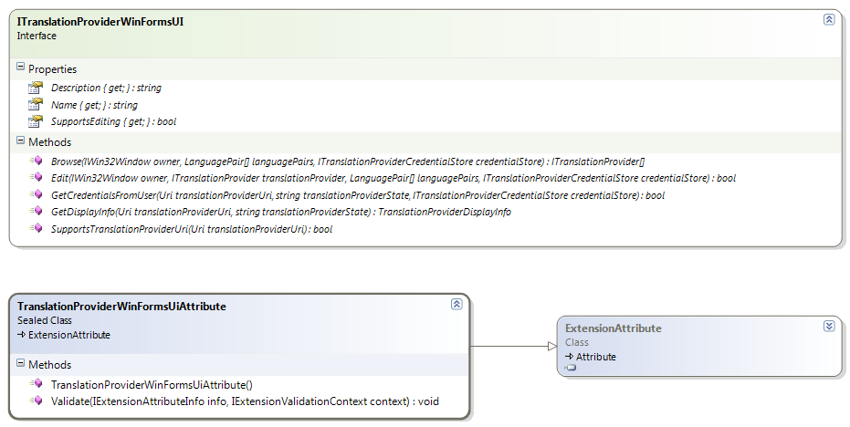

Creating the Translation Provider UI Extension
This section explains how to create a translation provider UI extension, which allows applications such as Trados Studio to browse for translation providers, edit translation provider settings, display translation providers in a unified way and prompt the user for translation provider credentials.
Overview
The translation provider UI component is a plug-in framework extension that allows applications such as Trados Studio to browse for translation providers, edit translation provider settings, display translation providers in a unified way and prompt the user for translation provider credentials.
The translation provider UI component is essentially optional, depending on where the translation provider is meant to be used. A fully functional Trados Studio translation provider implementation needs a translation provider UI component, but for other sceanrios it is perfectly valid to just implement a translation provider factory, for instance when the translation provider will be used in a server scenario only.
The translation provider UI component has to implement the ITranslationProviderWinFormsUI interface.

Registering the Extension
In order for the translation provider UI component to become available for use by host applications such as Trados Studio, it has to be marked up with a TranslationProviderWinFormsUiAttribute. This is a plug-in framework extension attribute that will be extracted into the plug-in manifest.
The Name, Description and Icon values of the extension attribute are for information only and are not being used in Trados Studio at the moment.
Browsing for Translation Providers
One of the responsibilities of the translation provider UI component is to allow the user to select translation providers through a user interface. The Browse method is called by Trados Studio when the user selects the corresponding "Add -> Translation provider X..." menu item in the translation providers list.
Editing Translation Provider Settings
After the user has added a translation provider to the translation providers list in Trados Studio, the UI component can also allow its changing properties or settings. If the SupportsEditing property returns True, a "Settings..." button will become available when a translation provider supported by the UI component is selected. When clicked, Trados Studio calls the Edit method.
Displaying Translation Providers
Trados Studio persists the translation provider list by persisting the Uri and state information. In order to display the list of translation providers in the user interface, Trados Studio does not necessarily instantiate all the translation providers. For this reason, the UI component also needs to be able to provide display information, given a certain translation provider Uri and state. This way, the translation provider UI component has the possibility of generating this information in a more lightweight way then by instantiating the translation provider itself, which might for instance involve connecting to a server, etc.
Prompting for User Credentials
The final responsibility of the Translation provider UI component is asking the user for credentials when these are required. Trados Studio does not necessarily persist credentials stored in the credential store (ITranslationProviderCredentialStore), which means that there will be situations where Trados Studio needs to prompt the user for credentials. In order to do this, Trados Studio calls the appropriate translation provider UI component, which in turn can show a log-on user interface that is appropriate for that particular translation provider and subsequently add these credentials to the translation provider credential store so they become available to the translation provider factory to instantiate the translation provider and perform the necessary authentication.